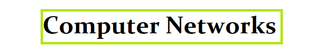

Year 1
Introduction to Computer Science
Programming & Problem Solving with c
Database Systems
Mathematics for Computing
Web design
 Data structures and Algorithms
Object-Oriented Programming with java
Computer Architecture
System design
Data structures and Algorithms
Object-Oriented Programming with java
Computer Architecture
System design
Year 2
Network System Administration
Computer Networks
Network Security
Integrating Project
Databases
Introduction to Internet
IT Legalisation & Ethics
Network and Security
Servers, clouds and datacenters
Year 3
Incident Prevention, Detection & Response
Network Monitoring
Cybercrime and Forensic Investigation
Advanced Networks
Voice and Video over IP>
Network Security Penetration Testing
Project
Course Fee
year 1= Rs500 000
year 2= Rs500 000
year 3= Rs500 000
Entry requirments
Students should obtain a minimum of 3 passes at the GCE Advanced Level or Foundation Certificate in Higher Education
and obtain a minimum of 6 passes in the GCE Ordinary Level with Credit passes in English & Mathematics.